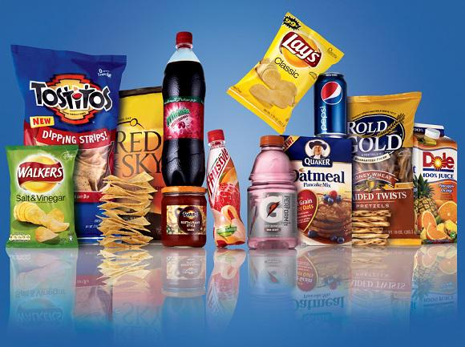

Home
PepsiCo, Inc. (stylized as PEPSICO) is an American multinational food, snack and beverage corporation headquartered in Purchase, New York. PepsiCo has interests in the manufacturing, marketing and distribution of grain-based snack foods, beverages and other products. PepsiCo was formed in 1965 with the merger of the Pepsi-Cola Company and Frito-Lay, Inc. PepsiCo has since expanded from its namesake product Pepsi to a broader range of food and beverage brands, the largest of which have included an acquisition of Tropicana Products in 1998 and the Quaker Oats Company in 2001, which added the Gatorade brand to its portfolio.News
As of January 26, 2012, 22 of PepsiCo's brands generated retail sales of more than $1 billion apiece,[2] and the company's products were distributed across more than 200 countries, resulting in annual net revenues of $43.3 billion. Based on net revenue, PepsiCo is the second largest food and beverage business in the world. Within North America, PepsiCo is the largest food and beverage business by net revenue. Indra Krishnamurthy Nooyi has been the chief executive of PepsiCo since 2006. The company's beverage distribution and bottling is conducted by PepsiCo as well as by licensed bottlers in certain regions. Approximately 274,000 employees[3] generated $66.415 billion in revenue as of 2013.[4]History
The recipe for the soft drink Pepsi was first developed in the 1880s by Caleb Bradham, a pharmacist and industrialist from New Bern, North Carolina. He coined the name "Pepsi-Cola" in 1898. As the cola developed in popularity, he created the Pepsi-Cola Company in 1902 and registered a patent for his recipe in 1903.[5] The Pepsi-Cola Company was first incorporated in the state of Delaware in 1919.[6] The company went bankrupt in 1931 and on June 8 of that year, the trademark and syrup recipe were purchased by Charles Guth who owned a syrup manufacturing business in Baltimore, Maryland. Guth was also the president of Loft, Incorporated, a leading candy manufacturer, and he used the company's labs and chemists to reformulate the syrup. He further contracted to stock the soda in Loft's large chain of candy shops and restaurants, which were known for their soda fountains, used

PRODUCTS AND BRANDS
PepsiCo's product mix as of 2015 (based on worldwide net revenue) consists of 53 percent foods, and 47 percent beverages.[31] On a worldwide basis, the company's current products lines include several hundred brands that in 2009 were estimated to have generated approximately $108 billion in cumulative annual retail sales.BUISNESS DIVISIONS
he structure of PepsiCo's global operations has shifted multiple times in its history as a result of international expansion, and as of 2016 it is separated into six main divisions: North America Beverages, Frito-Lay North America, Quaker Foods North America, Latin America, Europe Sub-Saharan African, and Asia, Middle East and North Africa.COMPETITION
The Coca-Cola Company has historically been considered PepsiCo's primary competitor in the beverage market,[27] and in December 2005, PepsiCo surpassed The Coca-Cola Company in market value for the first time in 112 years since both companies began to compete. In 2009, The Coca-Cola Company held a higher market share in carbonated soft drink sales within the U.S.[28] In the same year, PepsiCo maintained a higher share of the U.S. refreshment beverage market, however, reflecting the differences in product lines between the two companies.